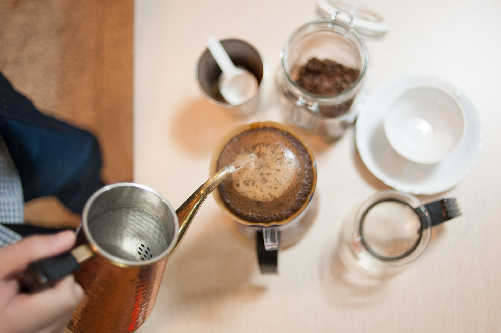
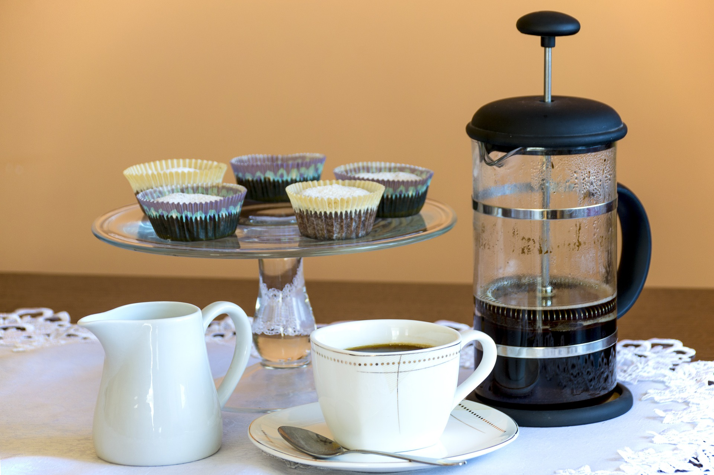

Some point in junior year of college, I realized that my coffee habit was becoming financially burdensome. Brewed coffee and Americanos a day, coupled with the occasional latte “treat,” was quickly racking up my living expenses, but I needed the caffeine. Refusing to dip to the level of taking caffeine pills, I decided to take up brewing myself. This is a “beginner’s guide to coffee brewing” for all the caffeine-dependent students like me.
What Do I Need to Make Coffee?
Making coffee inevitably involves ground coffee contacting with water, caffeine and other chemicals being “extracted” from ground coffee to the liquid phase, and then the liquid coffee being separated from the used-up grounds. There are three main methods to facilitate this – drip, immersion, and pressure.
Drip
 “Pourover” Manual Drip Coffee
Most people are probably familiar with drip coffee. Here, ground coffee is placed atop a filter (frequently paper, but metal ones also exist) and hot water is slowly “dripped” over the coffee through a machine or a kettle sprout. After a brief contact with coffee grounds (i.e. “extraction”), the liquid passes through the filter into a serving receptacle, and the “depleted” grounds remain within the filter. This short contact time between water and coffee implies that this method can bring out the complexities of each coffee roast.
There are both automatic and manual ways to make drip coffee. Most electronic coffee machines on the market are “drip,” and it’s not hard to find one for around $15 on Amazon, but the coffee won’t be great. Usually, the problem comes from the water heating unit – it’s inconsistent and frequently a fire hazard. With respect to flavor consequences, if the water comes out “too hot,” the resulting coffee will taste too bitter and “burnt.” On the other hand, if the water comes out “not hot enough,” flavors in the grounds will not be fully released, and the resulting coffee will taste stringent and sour.
Now, if you drink coffee with plenty of milk and sugar and aren’t scared of setting off the smoke detectors ever so often, a cheap drip coffee machine will probably check all the boxes. If you’re planning to taste the complexities within “good coffee,” though (after all, this is what drip is supposed to be good at), you should probably either plan on spending over a hundred bucks for a nicer machine or making drip coffee by hand, but I wouldn’t recommend it for starting out. Manual drip methods (also known as “pourover”) are known to be finicky – the size and weight of the grounds, volume and temperature of water, and even the speed at which water is added to the coffee grounds all have to be “perfect” for the coffee to taste good. Granted, I’ve grown to appreciate the “craft” of making, but if you’re just trying your hand, the effort isn’t worth it.
Immersion
 French Press
The theory behind immersion brew is simple – leave ground coffee and hot water together for some time and then pour the liquid out to serve. The French Press is probably the most recognizable method for doing this, and it’s easy to use. Add course-ground coffee, add hot water, wait four minutes, press the filter down, and serve immediately. Darker coffees with chocolate/caramel taste notes will work especially well for immersion brew – the contact time lets “everything” in the coffee come out.
The French Press is how I started making coffee by myself, and since it’s both cheap and easy, it’s also my method of choice when introducing someone new to making coffee. The French Press also offers an easy way to make cold brew – just switch out the hot water with cold water and the “4 minutes” with “12 – 24 hours,” and you can be hipster without having to break the bank!
Why, then, doesn’t everyone use French Presses? Simply put, it gets annoying. The fact that most French Presses have a course, metallic filter means that coffee grounds would sometimes get through the filter, leaving a “silty” texture in the resulting drink. For the same reason, coffee grounds would often get stuck in the filter, making clean-up difficult. There are also health concerns. Acids and oils, which are removed by paper filters, often end up in the final brew of the coffee, which would sometime result in adverse stomach reactions.
Pressure
 Moka Pot
Moka Pot
Probably the most complex method to make coffee. Theoretically, this is somewhat like drip coffee, but instead of having water passively flow over coffee grounds, these methods employ pressure to force hot water through a tightly-packed “puck” of fine-ground coffee. The result is a small volume of very strong coffee with intense flavoring – imagine every flavor you find in coffee… concentrated. The espresso is probably the most widely available example of pressure-made coffee – the good ones are intense and chocolatey, but the bad ones are extra bitter or extremely sour.
Unfortunately, an espresso is probably even more finicky than a pourover, and equipment costs for an acceptable example start in the thousands. More affordable pressure-driven options include the Moka Pot, a steam-based stovetop coffee maker, and the Aeropress, which requires the user to push a piston to generate pressure. Both devices are well-documented and supported by enthusiast communities and, at around $30, affordable. If you are the type of person who likes ordering an espresso at cafes for the intense flavor or the quick caffeination, these two options are worth checking out.
So, what should I use?
If you like normal-strength coffee, check out a French Press – they’re cheap and won’t break the bank, and can help you decide whether to invest in something higher-maintenance. If you like extra strong coffee, I’d recommend an Aeropress. Granted, they’ll be a bit more expensive, but the patented technology seems to be petty fool proof and low maintenance.
Another option to consider is the “Clever Dripper.” Essentially a pourover cone with a stopper on the bottom, this method combines the best elements of drip and immersion brewing to produce clean cups of coffee with low effort. Granted, it’s a little harder to use than a French press, and the cost of buying coffee filters could add up, but most reviews so far seem to suggest that this method is starting to replace the French Press as “everyone’s go to easy coffee maker.”
If you decide to continue on the coffee-making journey, invest in a scale (1g accuracy and a 2kg maximum capacity would work). This will greatly increase the consistency between your brews – so that each brew is just as great as the next. Once you’re used to this, buy a burr grinder. This would let you use fresh coffee beans that oxidize slower than ground, which would allow you to make fresher coffee every time.